人工智能的种类
人工智能可按技术分为三个分支:
1) 认知AI认知计算是最受欢迎的一个人工智能分支，负责所有感觉“像人一样”的交互。认知AI必须能够轻松处理复杂性和二义性，同时还持续不断地在数据挖掘、NLP（自然语言处理）和智能自动化的经验中学习。现在人们越来越倾向于认为认知AI混合了人工智能做出的最好决策和人类工作者们的决定，用以监督更棘手或不确定的事件。这可以帮助扩大人工智能的适用性，并生成更快、更可靠的答案。
2) 机器学习AI
机器学习AI是能在高速公路上自动驾驶你的特斯拉的那种人工智能。它还处于电脑科学的前沿，但将来有望对日常工作场所产生极大的影响。机器学习是要在大数据中寻找一些“模式”，然后在没有过多的人为解释的情况下，用这些模式来预测结果，而这些模式在普通的统计分析中是看不到的。
3) 深度学习AI
如果机器学习是前沿的，那么深度学习则是尖端的。这是一种你会把它送去参加智力问答的AI。它将大数据和无监督算法的分析相结合。它的应用通常围绕着庞大的未标记数据集，这些数据集需要结构化成互联的群集。深度学习的这种灵感完全来自于我们大脑中的神经网络，因此可恰当地称其为人工神经网络。深度学习是许多现代语音和图像识别方法的基础，并且与以往提供的非学习方法相比，随着时间的推移具有更高的准确度。
或按能力分为三种类型:
即：弱人工智能、强人工智能、超人工智能弱人工智能也称限制领域人工智能（Narrow AI）或应用型人工智能（Applied AI），指的是专注于且只能解决特定领域问题的人工智能。
例如：AlphaGo、Siri、FaceID……
强人工智能又称通用人工智能（Artificial General Intelligence）或完全人工智能（Full AI），指的是可以胜任人类所有工作的人工智能。 强人工智能具备以下能力： 存在不确定性因素时进行推理，使用策略，解决问题，制定决策的能力 知识表示的能力，包括常识性知识的表示能力 规划能力，学习能力，使用自然语言进行交流沟通的能，力和将上述能力整合起来实现既定目标的能力
超人工智能 假设电脑程序通过不断发展，可以比世界上最聪明，最有天赋的人类还聪明，那么，由此产生的人工智能系统就可以被称为超人工智能。 我们当前所处的阶段是弱人工智能，强人工智能还没有实现（甚至差距较远），而超人工智能更是连影子都看不到。所以“特定领域”目前还是 AI 无法逾越的边界。
人工智能的重要性何在？
今天，人类和计算机产生的数据量之庞大，已远远超出人类可以吸收、解释并据此做出复杂决策的能力范围。人工智能构成了所有计算机学习的基础，代表着所有复杂决策的未来。例如，井字棋（圈叉游戏）有 255168 种不同的走法，其中 46080 种走法会出现平局。但尽管如此，大多数人都能算出如何才能不输掉游戏。西洋跳棋则有超过 500 x 10 的 18 次方种不同的可能走法，因此能称得上高手的人寥寥无几。计算机能够极其高效地计算这些走法的排列组合，并得出最佳对策。人工智能的能力边界是什么？
如果在深入一点，从理论层面来解释 AI 的能力边界，就要把图灵大师搬出来了。图灵在上世纪30年代中期，就在思考3个问题：
1.世界上是否所有数学问题都有明确的答案？
2.如果有明确的答案，是否可以通过有限的步骤计算出答案？
3.对于那些有可能在有限步骤计算出来的数学问题，能否有一种假象的机械，让他不断运动，最后当机器停下来的时候，那个数学问题就解决了？
图灵还真设计出来一套方法，后人称它为图灵机。今天所有的电脑，包括全世界正在设计的新的电脑，从解决问题的能力来讲，都没有超出图灵机的范畴。通过上面的3个问题，图灵已经划出了界限，这个界限不但适用于今天的 AI ，也适用于未来的 AI 。 下面我们再进一步把边界清晰的描述一下：
1.世界上有很多问题，只有一小部分是数学问题
2.在数学问题里，只有一小部分是有解的
3.在有解的问题中，只有一部分是理想状态的图灵机可以解决的
4.在后一部分（图灵机可解决的部分），又只有一部分是今天的电脑可以解决的
5.而 AI 可以解决的问题，又只是电脑可以解决问题的一部分... 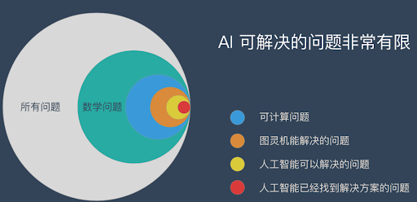
担心人工智能太强大？你想多了！在一些特定场景中， AI 可以表现的很好，但是在大部分场景中，AI 并没有什么用。
如何打造人工智能
什么是深度学习与机器学习?
深度学习(deep learning)和机器学习(machine learning)都是人工智能的子领域,深度学习实际上是机器学习的一个子领域。深度学习和机器学习的不同之处在于每个算法如何学习。 深度学习可以自动执行过程中的大部分特征提取，消除某些必需的人工干预，并能够使用更大的数据集。 可将深度学习视为“可扩展的机器学习”， 正如 Lex Fridman 在同一 MIT 讲座中所指出的那样。 常规的机器学习，或叫做"非深度"机器学习，更依赖于人工干预进行学习。机器学习
1956 年提出 AI 概念，短短3年后（1959） Arthur Samuel 就提出了机器学习的概念:“Field of study that gives computers the ability to learn without being explicitly programmed
(机器学习研究和构建的是一种特殊算法，而非某一个特定的算法，能够让计算机自己在数据中学习从而进行预测)”
所以，机器学习不是某种具体的算法，而是很多算法的统称。机器学习包含了很多种不同的算法，深度学习就是其中之一，其他方法包括决策树，聚类，贝叶斯等。 深度学习的灵感来自大脑的结构和功能，即许多神经元的互连。人工神经网络（ANN）是模拟大脑生物结构的算法。
在解释机器学习的原理之前，先把最精髓的基本思路介绍给大家，理解了机器学习最本质的东西，就能更好的利用机器学习，同时这个解决问题的思维还可以用到工作和生活中。
机器学习的基本思路
1.把现实生活中的问题抽象成数学模型，并且很清楚模型中不同参数的作用2.利用数学方法对这个数学模型进行求解，从而解决现实生活中的问题
3.评估这个数学模型，是否真正的解决了现实生活中的问题，解决的如何？
无论使用什么算法，使用什么样的数据，最根本的思路都逃不出上面的3步！
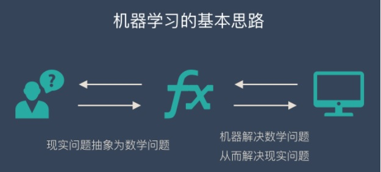
当我们理解了这个基本思路，我们就能发现：不是所有问题都可以转换成数学问题的。那些没有办法转换的现实问题 AI 就没有办法解决。同时最难的部分也就是把现实问题转换为数学问题这一步。
机器学习的原理
下面以监督学习为例，给大家讲解一下机器学习的实现原理。假如我们正在教小朋友识字（一、二、三）。我们首先会拿出3张卡片，然后便让小朋友看卡片，一边说“一条横线的是一、两条横线的是二、三条横线的是三”。不断重复上面的过程，小朋友的大脑就在不停的学习。当重复的次数足够多时，小朋友就学会了一个新技能——认识汉字：一、二、三。我们用上面人类的学习过程来类比机器学习。机器学习跟上面提到的人类学习过程很相似。 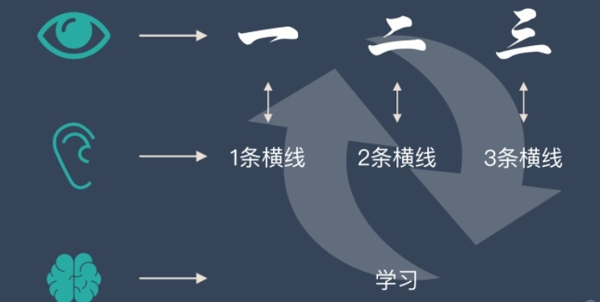
上面提到的认字的卡片在机器学习中叫——训练集
上面提到的“一条横线，两条横线”这种区分不同汉字的属性叫——特征
小朋友不断学习的过程叫——建模
学会了识字后总结出来的规律叫——模型
通过训练集，不断识别特征，不断建模，最后形成有效的模型，这个过程就叫“机器学习”！
机器学习根据训练方法大致可以分为3大类：
监督学习，非监督学习，和强化学习监督学习是指我们给算法一个数据集，并且给定正确答案。机器通过数据来学习正确答案的计算方法。
举个例子：我们准备了一大堆猫和狗的照片，我们想让机器学会如何识别猫和狗。当我们使用监督学习的时候，我们需要给这些照片打上标签。 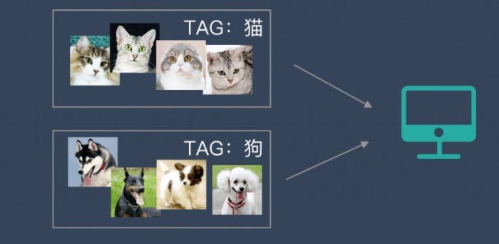
我们给照片打的标签就是“正确答案”，机器通过大量学习，就可以学会在新照片中认出猫和狗。 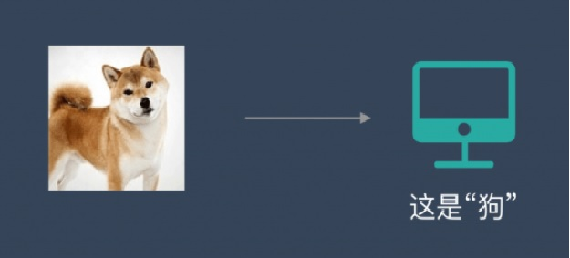
这种通过大量人工打标签来帮助机器学习的方式就是监督学习。这种学习方式效果非常好，但是成本也非常高。
非监督学习中，给定的数据集没有“正确答案”，所有的数据都是一样的。无监督学习的任务是从给定的数据集中，挖掘出潜在的结构。 举个例子：我们把一堆猫和狗的照片给机器，不给这些照片打任何标签，但是我们希望机器能够将这些照片分分类。 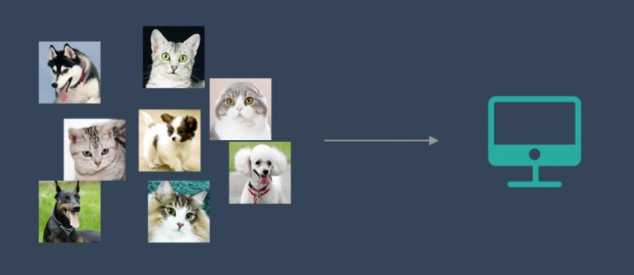
通过学习，机器会把这些照片分为2类，一类都是猫的照片，一类都是狗的照片。虽然跟上面的监督学习看上去结果差不多，但是有着本质的差别： 非监督学习中，虽然照片分为了猫和狗，但是机器并不知道哪个是猫，哪个是狗。对于机器来说，相当于分成了 A、B 两类。 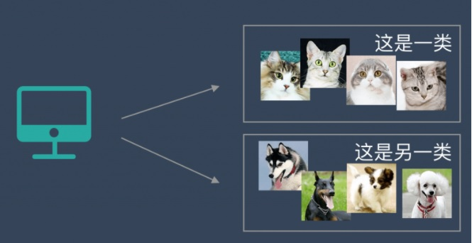
强化学习更接近生物学习的本质，因此有望获得更高的智能。它关注的是智能体如何在环境中采取一系列行为，从而获得最大的累积回报。通过强化学习，一个智能体应该知道在什么状态下应该采取什么行为。 最典型的场景就是打游戏。
2019年1月25日，AlphaStar（Google 研发的人工智能程序，采用了强化学习的训练方式） 完虐星际争霸的职业选手职业选手“TLO”和“MANA”。
> link
你会发现，强化学习和监督学习、无监督学习 最大的不同就是不需要大量的“数据喂养”。而是通过自己不停的尝试来学会某些技能。
通过上面的内容，我们对机器学习已经有一些模糊的概念了，这个时候肯定会特别好奇：
到底怎么使用机器学习？
机器学习在实际操作层面一共分为7步： 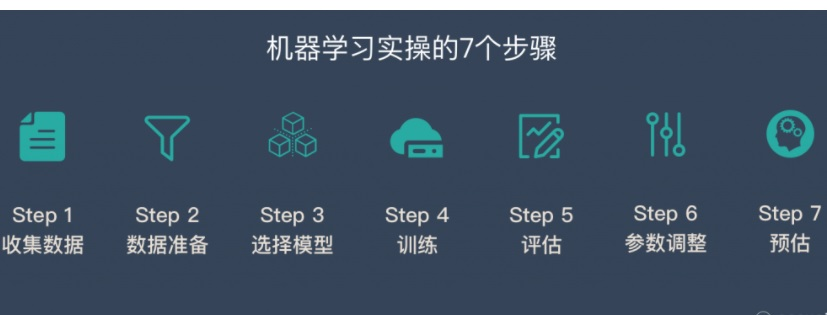
YouTube 上有一个视频介绍了这7个步骤
另外，这里有15种经典机器学习算法：
| 算法 | 训练方式 |
|---|---|
| 线性回归 | 监督学习 |
| 逻辑回归 | 监督学习 |
| 线性判别分析 | 监督学习 |
| 决策树 | 监督学习 |
| 朴素贝叶斯 | 监督学习 |
| K邻近 | 监督学习 |
| 学习向量量化 | 监督学习 |
| 支持向量机 | 监督学习 |
| 随机森林 | 监督学习 |
| AdaBoost | 非监督学习 |
| 高斯混合模型 | 非监督学习 |
| 限制玻尔兹曼机 | 非监督学习 |
| K-means聚类 | 非监督学习 |
| 最大期望算法 | 非监督学习 |
了解更多机器学习: baidu wiki
深度学习
深度学习的概念源于人工神经网络的研究，但是并不完全等于传统神经网络。不过在叫法上，很多深度学习算法中都会包含”神经网络”这个词，比如：卷积神经网络、循环神经网络。所以，深度学习可以说是在传统神经网络基础上的升级，约等于神经网络。大白话解释深度学习
我们以识别图片中的汉字为例。假设深度学习要处理的信息是“水流”，而处理数据的深度学习网络是一个由管道和阀门组成的巨大水管网络。网络的入口是若干管道开口，网络的出口也是若干管道开口。这个水管网络有许多层，每一层由许多个可以控制水流流向与流量的调节阀。根据不同任务的需要，水管网络的层数、每层的调节阀数量可以有不同的变化组合。对复杂任务来说，调节阀的总数可以成千上万甚至更多。水管网络中，每一层的每个调节阀都通过水管与下一层的所有调节阀连接起来，组成一个从前到后，逐层完全连通的水流系统。 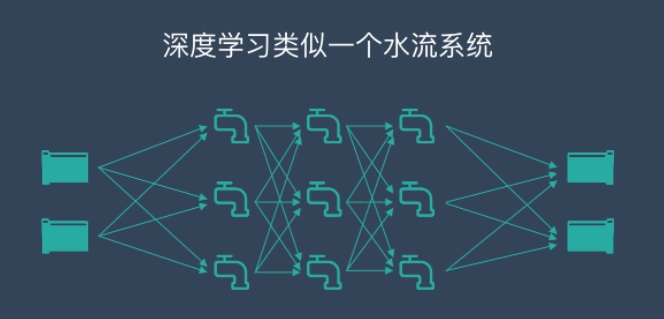
那么，计算机该如何使用这个庞大的水管网络来学习识字呢？比如，当计算机看到一张写有“田”字的图片，就简单将组成这张图片的所有数字（在计算机里，图片的每个颜色点都是用“0”和“1”组成的数字来表示的）全都变成信息的水流，从入口灌进水管网络。
我们预先在水管网络的每个出口都插一块字牌，对应于每一个我们想让计算机认识的汉字。这时，因为输入的是“田”这个汉字，等水流流过整个水管网络，计算机就会跑到管道出口位置去看一看，是不是标记由“田”字的管道出口流出来的水流最多。如果是这样，就说明这个管道网络符合要求。如果不是这样，就调节水管网络里的每一个流量调节阀，让“田”字出口“流出”的水最多。这下，计算机要忙一阵了，要调节那么多阀门！好在计算机的速度快，暴力的计算加上算法的优化，总是可以很快给出一个解决方案，调好所有阀门，让出口处的流量符合要求。 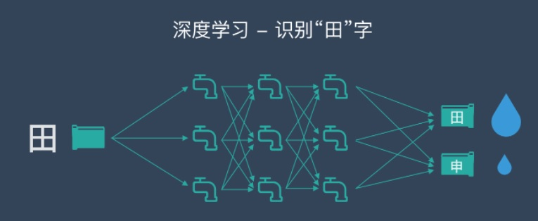
下一步，学习“申”字时，我们就用类似的方法，把每一张写有“申”字的图片变成一大堆数字组成的水流，灌进水管网络，看一看，是不是写有“申”字的那个管道出口流水最多，如果不是，我们还得再调整所有的阀门。这一次，要既保证刚才学过的“田”字不受影响，也要保证新的“申”字可以被正确处理。 如此反复进行，知道所有汉字对应的水流都可以按照期望的方式流过整个水管网络。这时，我们就说，这个水管网络是一个训练好的深度学习模型了。当大量汉字被这个管道网络处理，所有阀门都调节到位后，整套水管网络就可以用来识别汉字了。这时，我们可以把调节好的所有阀门都“焊死”，静候新的水流到来。 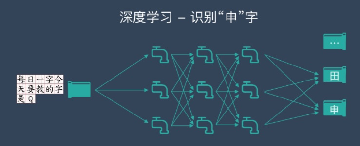
与训练时做的事情类似，未知的图片会被计算机转变成数据的水流，灌入训练好的水管网络。这时，计算机只要观察一下，哪个出水口流出来的水流最多，这张图片写的就是哪个字。 深度学习大致就是这么一个用人类的数学知识与计算机算法构建起来的整体架构，再结合尽可能多的训练数据以及计算机的大规模运算能力去调节内部参数，尽可能逼近问题目标的半理论、半经验的建模方式。
传统机器学习 VS 深度学习
在数据准备和预处理方面，两者是很相似的。他们都可能对数据进行一些操作：- 数据清洗
- 数据标签
- 归一化
- 去噪
- 降维
传统机器学习和深度学习的核心区别
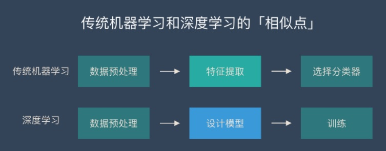传统机器学习的特征提取主要依赖人工，针对特定简单任务的时候人工提取特征会简单有效，但是并不能通用。深度学习的特征提取并不依靠人工，而是机器自动提取的。这也是为什么大家都说深度学习的可解释性很差，因为有时候深度学习虽然能有好的表现，但是我们并不知道他的原理是什么。
深度学习的优缺点
优点1：学习能力强从结果来看，深度学习的表现非常好，他的学习能力非常强。
优点2：覆盖范围广，适应性好
深度学习的神经网络层数很多，宽度很广，理论上可以映射到任意函数，所以能解决很复杂的问题。
优点3：数据驱动，上限高
深度学习高度依赖数据，数据量越大，他的表现就越好。在图像识别、面部识别、NLP 等部分任务甚至已经超过了人类的表现。同时还可以通过调参进一步提高他的上限。
优点4：可移植性好
由于深度学习的优异表现，有很多框架可以使用，例如 TensorFlow、Pytorch。这些框架可以兼容很多平台。
缺点1：计算量大，便携性差
深度学习需要大量的数据很大量的算力，所以成本很高。并且现在很多应用还不适合在移动设备上使用。目前已经有很多公司和团队在研发针对便携设备的芯片。这个问题未来会得到解决。
缺点2：硬件需求高
深度学习对算力要求很高，普通的 CPU 已经无法满足深度学习的要求。主流的算力都是使用 GPU 和 TPU，所以对于硬件的要求很高，成本也很高。
缺点3：模型设计复杂
深度学习的模型设计非常复杂，需要投入大量的人力物力和时间来开发新的算法和模型。大部分人只能使用现成的模型。
缺点4：没有“人性”，容易存在偏见
由于深度学习依赖数据，并且可解释性不高。在训练数据不平衡的情况下会出现性别歧视、种族歧视等问题。
4种典型的深度学习算法
卷积神经网络 – CNNCNN 的价值：
能够将大数据量的图片有效的降维成小数据量(并不影响结果)
能够保留图片的特征，类似人类的视觉原理
CNN 的基本原理：
卷积层 – 主要作用是保留图片的特征
池化层 – 主要作用是把数据降维，可以有效的避免过拟合
全连接层 – 根据不同任务输出我们想要的结果
CNN 的实际应用：
- 图片分类、检索
- 目标定位检测
- 目标分割
- 人脸识别
- 骨骼识别
RNN 是一种能有效的处理序列数据的算法。比如：文章内容、语音音频、股票价格走势等等
之所以他能处理序列数据，是因为在序列中前面的输入也会影响到后面的输出，相当于有了“记忆功能”。但是 RNN 存在严重的短期记忆问题，长期的数据影响很小（哪怕他是重要的信息）。
于是基于 RNN 出现了 LSTM 和 GRU 等变种算法。这些变种算法主要有几个特点：
- 长期信息可以有效的保留
- 挑选重要信息保留，不重要的信息会选择“遗忘”
- 文本生成
- 语音识别
- 机器翻译
- 生成图像描述
我们可以用一个比喻来解释生成对抗网路。
假设一个城市治安混乱，有无数的小偷。在这些小偷中，有的可能是盗窃高手，有的可能毫无技术可言。当这个城市开始整顿治安，开展一场打击犯罪的「运动」，很快，一批「学艺不精」的小偷就被捉住了。 但捉住的只是没有技术含量的小偷，因为警察们的技术也不太高，在捉住低端小偷后，城市的治安水平不一定显著提高，但很明显的是小偷们的平均水平已经大大提高了。
于是，警察们开始继续训练自己的破案技术，开始抓住那些越来越狡猾的小偷。随着这些职业惯犯们的落网，警察们也练就了特别的本事，他们能很快能从一群人中发现可疑人员，于是上前盘查，并最终逮捕嫌犯；小偷们的日子也不好过了，因为警察们的水平大大提高，如果还想以前那样表现得鬼鬼祟祟，那么很快就会被警察捉住。为了避免被捕，小偷们努力表现得不那么「可疑」，而魔高一尺、道高一丈，警察也在不断提高自己的水平，争取将小偷和无辜的普通群众区分开。随着警察和小偷之间的这种「交流」与「切磋」，小偷们都变得非常谨慎，他们有着极高的偷窃技巧，表现得跟普通群众一模一样，而警察们都练就了「火眼金睛」，一旦发现可疑人员，就能马上发现并及时控制——最终，我们同时得到了最强的小偷和最强的警察。